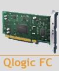

Target driver qla2x00t for QLogic FC adapters
 This is target driver for QLogic qla2xxx (22xx++) Fibre Channel adapters.
This driver starting from version 3.1 supports 16G Hilda QLogic chip based adapters (post-Hilda QLogic chips not supported) and has many other important improvements. This driver should also support FCoE, but that has never been verified. It has passed intensive internal SanDisk tests. It is stable and production ready. This driver is in stable maintenance mode in favor of the QLogic git tree driver (see below). This is the recommended driver to use in production at the moment.
You can find the latest updates for this driver in the SVN trunk.
The latest QLogic maintained version of this driver with full support of the latest QLogic chips for both FC and FCoE you can find in git://git.qlogic.com/scst-qla2xxx.git. That version also supports T10-PI functionality. It is maintained by QLogic, hence located in the QLogic's git. See SVN root README for instructions how to integrate it into the SCST build tree. However, not all improvements from the SVN trunk target driver have been integrated in this driver yet, so it is not as stable and functional as the SVN trunk driver.